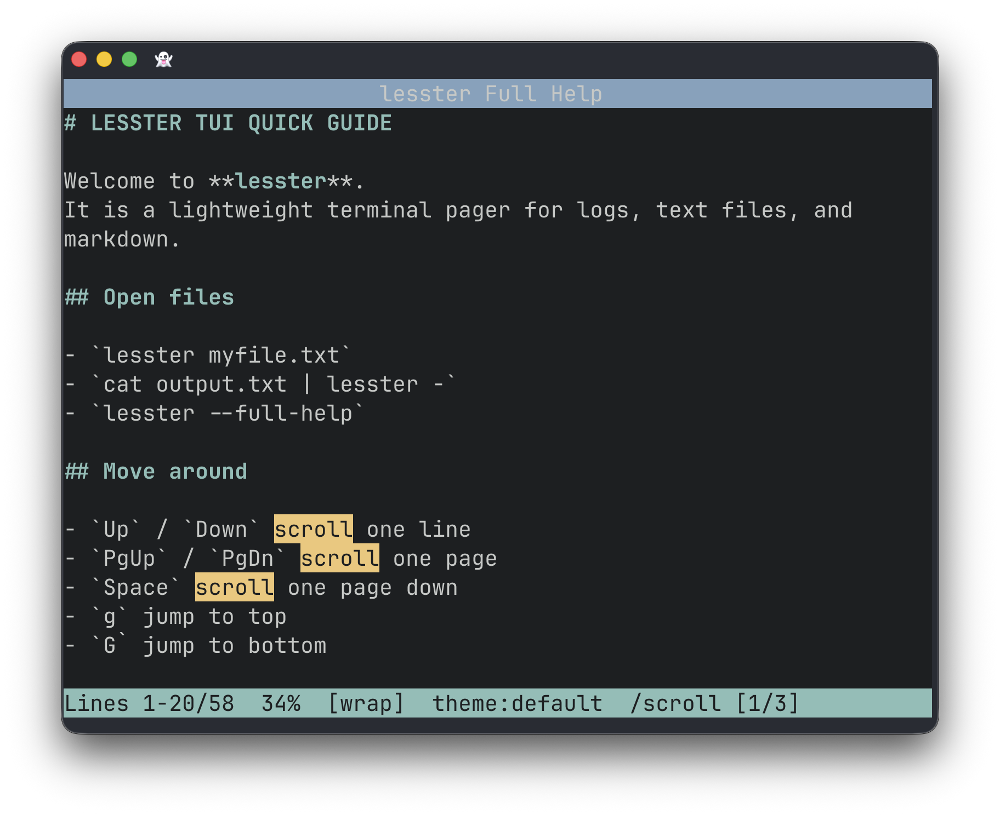

A less-like interactive text pager library for Nim
lesster is a Nim library that gives any terminal application a
full-screen, keyboard-driven text viewer — the kind you already know from
less or man — in just two lines of code.
It is built on top of nimwave and illwave, giving you smooth rendering, Unicode support, multiple colour themes, regex search, and optional Markdown highlighting, without any dependency on external system pagers.
Use it to display help text, log output, generated reports, or any long string your program produces — instead of dumping everything to stdout and losing the user in a wall of text.

Add the package to your project:
nimble install lessterDisplay an in-memory sequence of lines:
import lesster
let lines = readFile("report.txt").splitLines()
viewText(lines, title = "My Report", themeName = "default")Or open a file directly (pass "-" for stdin):
import lesster
viewFile("output.log", title = "Build Log", themeName = "dark")
# pipe-friendly: cat report.txt | ./myapp -
viewFile("-", title = "stdin", themeName = "terminal")Custom theme at runtime:
import lesster
from illwave as iw import nil
var myTheme = ThemesTable["dark"]
myTheme.titleBg = iw.bgBlue
myTheme.titleFg = iw.fgWhite
# See API reference for all Theme fieldsAll bindings are active in the default normal mode. Press q at any time to exit.
Pass a theme name to viewText / viewFile, or let users
cycle through them interactively with Tab. You can also
construct a Theme object from scratch for full control.
The full API reference documents every exported symbol.